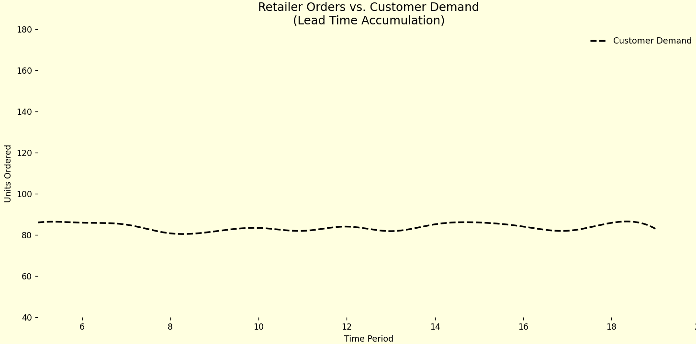

üì¶üí• Tiny demand changes. Massive overreactions. Welcome to the Bullwhip Effect.
Remember the toilet paper panic of 2020? üߪ
A small spike in customer demand → shelves wiped clean → manufacturers overwhelmed → suppliers scrambling.
That wasn’t just panic-buying — it was the Bullwhip Effect in action.
üîç In a classic paper, Chen, Drezner, Ryan & Simchi-Levi explained why this happens — and backed it with math. They showed how simple forecasting and inventory policies can amplify demand signals as you move upstream in the supply chain.
üí£ And the consequences?
The Bullwhip Effect isn’t just academic — it’s a business threat:
üöö Bloated inventories (followed by empty ones)
⏱️ Delayed production & overreactions
üìâ Poor service levels and planning chaos
üí∏ Lost sales, wasted capacity, and broken trust
Even when everyone shares data and plays by the rules — the bullwhip doesn’t vanish. It just snaps a little softer.
üéØ Want to soften the snap?
✅ Use smoother, more robust forecasting
✅ Shorten lead times where possible
✅ Share demand data across the chain
✅ Don’t overreact to short-term noise
üìñ “Quantifying the Bullwhip Effect in a Simple Supply Chain” – Management Science (2000)
Still a must-read for anyone trying to tame the chaos — from TP to tech.
#SupplyChain #BullwhipEffect #InventoryManagement #Forecasting #CovidLessons #Logistics #DecisionScience #DemandPlanning #ToiletPaperCrisis

üì¶ Bullwhip Effect Simulation: Calculation Overview
1. Customer Demand (AR(1) Process)
Customer demand follows an autoregressive model:
\( D_t = \mu + r D_{t-1} + \epsilon_t \)
- \(\mu\): Base demand level (e.g., 50 units)
- r: Correlation between time periods
- \(\epsilon_t\): Random noise, normally distributed with standard deviation \(\sigma\)
2. Retailer's Forecasting
The retailer forecasts demand using a moving average over the last \(p\) periods and projects it for a lead time of \(L\):
Forecast of mean demand:
\( \hat{D}_{t,L} = \left( \frac{1}{p} \sum_{i=1}^{p} D_{t-i} \right) \cdot L \)
Forecast of standard deviation:
\( \hat{\sigma}_{t,L} = \text{std}(D_{t-p}, \dots, D_{t-1}) \cdot \sqrt{L} \)
Order-up-to level:
\( y_t = \hat{D}_{t,L} + z \cdot \hat{\sigma}_{t,L} \)
- p: Forecast window size
- L: Lead time
- z: Safety factor (e.g., 1.65 for ~95% service level)
3. Retailer's Order Quantity
The order placed by the retailer follows an order-up-to policy:
\( q_t = y_t - y_{t-1} + D_{t-1} \)
This ensures the inventory is brought up to the new level while accounting for last period’s sales.
4. Bullwhip Effect Quantification
The Bullwhip Effect is quantified by comparing the variance of orders to that of demand:
\( \text{Bullwhip Ratio} = \frac{\text{Var}(q_t)}{\text{Var}(D_t)} \)
- If > 1: Bullwhip effect is present
- If = 1: No amplification
- If < 1: (Rare) occurs with extreme smoothing or negative correlation
Summary of Key Parameters
| Parameter | Description | Impact |
|---|
| \(\mu\) | Base demand level | Sets average demand |
| \(\sigma\) | Demand noise (volatility) | More randomness |
| r | Autocorrelation | Smoother (high r) vs. noisier (low r) |
| L | Lead time | Longer = greater uncertainty |
| p | Forecast window | Short = reactive, Long = smooth |
| z | Safety stock factor | Higher z = more conservative stock |
üìà Bullwhip Effect: Relationship with Lead Time and Forecast Window
In the paper "Quantifying the Bullwhip Effect in a Simple Supply Chain" (Chen et al., 2000), the authors derive a lower bound that shows how the bullwhip effect grows as a function of lead time \( L \), moving average forecast window size \( p \), and the demand autocorrelation parameter \( r \).
General Case (with AR(1) demand autocorrelation)
\[
\frac{\text{Var}(q_t)}{\text{Var}(D_t)} \geq 1 + \left( \frac{2L}{p} + \frac{2L^2}{p^2} \right)(1 - r^p)
\]
- \( L \): Lead time between order and delivery
- \( p \): Number of past periods used in the moving average forecast
- \( r \): AR(1) demand autocorrelation coefficient
Special Case (when \( r = 0 \))
\[
\frac{\text{Var}(q_t)}{\text{Var}(D_t)} \geq 1 + \left( \frac{2L}{p} + \frac{2L^2}{p^2} \right)
\]
This version represents the case where demand is independent and identically distributed (i.i.d.) over time.
Interpretation
- Higher \( L \) (longer lead time) increases the bullwhip effect significantly.
- Higher \( p \) (smoother forecasts) reduces the bullwhip effect.
- Positive \( r \) (correlated demand) mitigates bullwhip due to more predictable patterns.
This formula provides key insights for supply chain design and inventory policy tuning.
Python simulation and animation of the Bullwhip Effect.
Python Code 1 |
Python Code 2